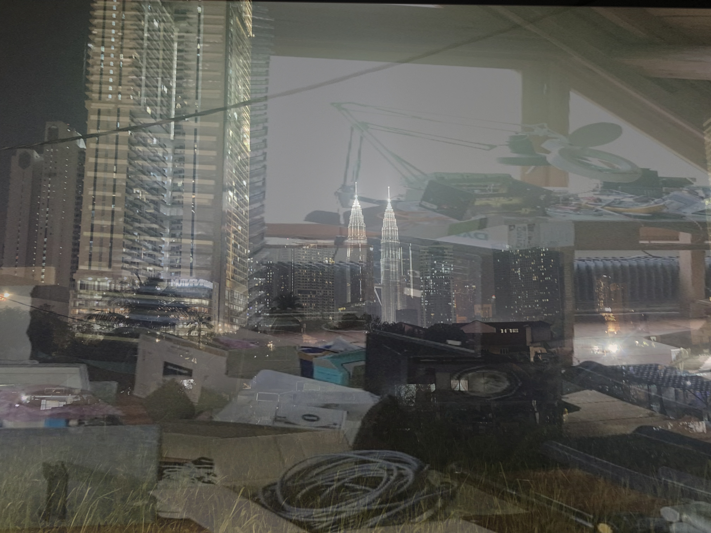

computer vision & art #1 : imaginary landscapes
Observation
Standing in front of my uncle's workshop in Alsace, a month ago. Electronics scattered across every surface—the archaeology of half-finished projects. In the center: a tower. Not intentional. Just accumulation. Capacitors, resistors, PCBs stacked vertically by accident or entropy.

I'm looking at it but I'm not there anymore.
The tower becomes architecture. The clutter becomes urbanism. The workshop dissolves into something else entirely.
Three months earlier: Kuala Lumpur with Walid. Towers rising through humidity and haze. The way buildings emerge from density, from the noise floor of the city itself.

This is how memory works, I think. Surfaces map onto other surfaces. A pile of electronics is a skyscraper if the correspondence is strong enough. Geography becomes psychological. The workshop contains Malaysia because I decided it does.
Correspondence
Brian Eno describes his ambient works as "imaginary landscapes"—places that exist in the intersection of observation and projection. In the 1989 documentary of the same name, Eno walks through actual landscapes—California, Suffolk, New York—while explaining how these physical spaces inform his mental ones. The instrumental pieces he creates aren't illustrations of place, but rather landscapes for the mind, spaces you inhabit perceptually rather than physically.
The Shutov Assembly, released around that time, exemplifies this. Each piece has a nine-letter title referring to a real location (all of which hosted one of Eno's artworks) without being in any way illustrative. The music exists parallel to the place, not as its representation.
What if landscape is always already imaginary? What if space is just perspective waiting to be transformed?
Homographic projection: a method for mapping one planar surface onto another through mathematical transformation.
x' = H x
Where x is a point in image 1 and x' is its corresponding point in image 2.
H = K'(R - t nT/d) K-1
Where:
- K, K' are the intrinsic camera matrices
- R, t describe rotation and translation between cameras
- n, d define the plane's normal and distance
In practice: select four corresponding points between two images. The algorithm calculates the transformation matrix. Apply the warp. Blend at varying ratios.
The code is minimal:
# Load images
img1 = cv2.imread("bordel_jc.jpeg")
img2 = cv2.imread("kl_skyscraper.jpg")
# Select 4 corresponding points on each image
pts_img1 = [[x1,y1], [x2,y2], [x3,y3], [x4,y4]]
pts_img2 = [[x1',y1'], [x2',y2'], [x3',y3'], [x4',y4']]
# Calculate homography
H = cv2.getPerspectiveTransform(pts_img2, pts_img1)
# Warp and blend
warped = cv2.warpPerspective(img2, H, (width, height))
result = cv2.addWeighted(img1, 0.5, warped, 0.5, 0)
What interests me isn't the complexity—it's the compression. Four points. One matrix. Two realities collapse into a third space that belongs to neither.
The result: Kuala Lumpur rising from tangled cables. Malaysia superimposed on Alsace. Neither location is preserved. Both are present.

The 50-50 blend reveals something—not quite synthesis, more like interference. You can see through one image into the other. Texture from the workshop bleeds into the tower's geometry. The skyscraper's verticality organizes the chaos below it.
It's not realistic. It's not supposed to be. It's a study in correspondence—how one surface can activate the latent structure in another.
Synthesis
Eno's imaginary landscapes exist at the intersection of physical space and mental projection. My uncle's workshop felt like a city not because it resembled one literally, but because the correspondence was psychologically strong enough. The homography doesn't create this correspondence—it reveals it, materializes it, makes it visible.
This is what computation offers: the ability to honor associations that exist only perceptually. The algorithm takes seriously what might otherwise remain a passing thought, a daydream. It transforms the imaginary into the concrete without demanding that the imaginary become realistic.
The workshop is still a mess. The tower of electronics hasn't moved. But now it contains Kuala Lumpur—not as metaphor, not as analogy, but as actual superposition. A third space that exists only in the projection, only in the mathematical transformation of one perspective into another.
Sometimes the most interesting landscapes are the ones that never existed until you decided they did.